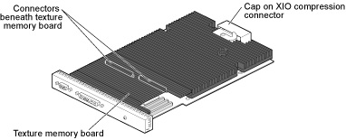

| NOTE: | Be sure all of the XIO slots are filled with a graphics board or blank panels. The system will not cool properly if any of the slots are empty. |
| NOTE: | To have the host report what graphics board information it sees,
type the following in a shell: /usr/gfx/gfxinfo |
Illustration 3: Octane Solid Impact board with Texture Memory
